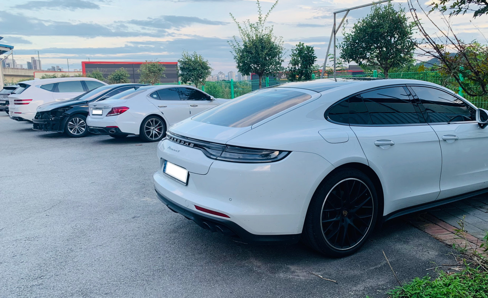
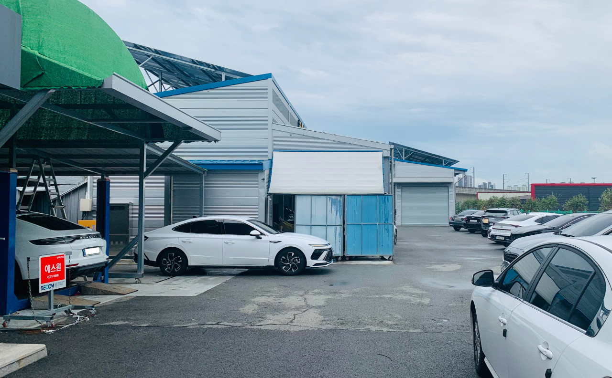

주요 서비스

자동차 수리
일반 정비부터 증상 점검, 수리까지 차량 상태에 맞춰 진행합니다.

포르쉐 전문 공업사
포르쉐 차량 정비 경험을 바탕으로 항목별 점검·정비를 진행합니다.

점검·상담
차종/연식/증상을 확인 후 정비 범위와 작업 내용을 안내드립니다.
포트폴리오(작업 사례)는 추후 업데이트 예정입니다.
사진 보기
포르쉐 전문 정비 범위
점검/정비 항목
- 전자진단/경고등 — 스캔 진단, 증상 원인 분석
- 엔진/점화/연료 — 출력 저하, 부조, 시동 불량 등
- 냉각/오버히트 — 냉각수 누수, 온도 상승, 팬/서모스탯 점검
- 오일 누유/누수 — 엔진/미션/하부 누유 점검 및 수리
- 하체/서스펜션 — 소음, 떨림, 유격, 얼라인 관련 점검
- 브레이크 — 패드/디스크/캘리퍼 점검, 제동 성능 개선
- 배기/흡기 — 누기/소음 점검, 성능 저하 원인 확인
- 에어컨/공조 — 냉방 불량, 냄새, 컴프레서/가스 점검
상담 시 빠른 안내를 위한 정보
- 차종/연식(예: 911/카이엔/마칸 등)
- 증상(경고등, 소음, 떨림, 누유, 시동 등)
- 최근 정비 이력(있다면)
예약은 0507-1372-6344
전화하기
* 정비 항목은 차량 상태에 따라 달라질 수 있으며, 정확한 작업 범위는 점검 후 안내드립니다.